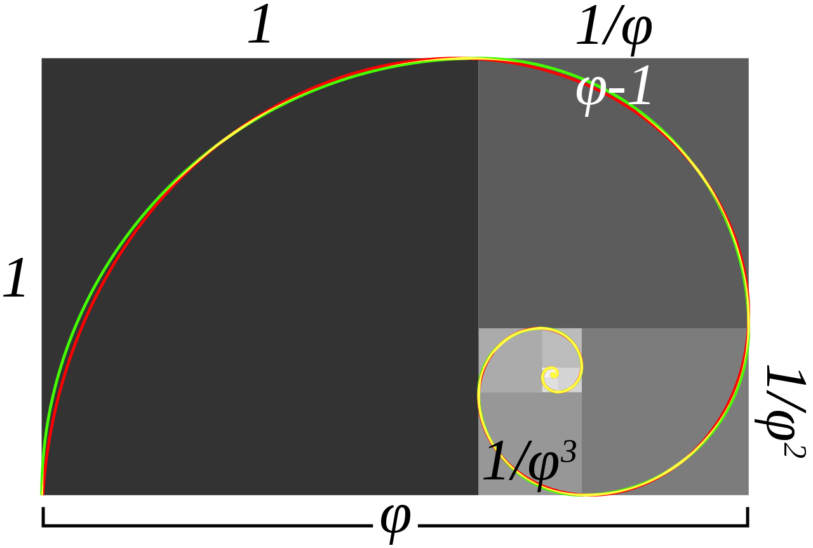

Złota liczba znana również jako złoty podział, złota proporcja lub podział harmoniczny i jest
oznaczany grecką literą φ. Jest to podział
odcinka na dwie części w taki sposób, że stosunek długości dłuższej części do krótszej jest taki
sam jak
stosunek całego odcinka do dłuższej części. Wartość złotej liczby wynosi:
φ = 1.6180339887...
Złoty podział znany był już w starożytności i przypisywano mu
wyjątkowe walory estetyczne. Złoty podział (łac. sectio aurea) jest nazywany również złotym
stosunkiem, złotym środkiem,
boską proporcją, boskim podziałem lub środkiem Fidiasza. Aby podnieść złotą liczbę do kwadratu
należy dodać do niej 1, oraz aby znaleźć odwrotność złotej liczby, wyystarczy odjąć od niej 1.

Dwie wielokości są w złotym stosunku φ jeżeli: a/b = φ.
Aby znaleźć φ należy zacząć od lewej strony. Z rozdzielenia równości dzielenia względem dodawania i
podstawienie b/a = 1/φ wynika:
Równanie ma dwa rozwiązania rzeczywiste, z których jedno jest
dodatnie
Ciąg Fibonacciego to ciąg liczb naturalnych określony przez warunek: Pierwszy wyraz
ciągu jest równy 0, kolejny jest równy 1, każdy następny jest sumą dwóch poprzednich wyrazów.
Liczbami Fibonaccieego nazywamy kolejne wyrazy ciągu.Złoty
podział i ciąg Fibonacciego są ze są blisko powiązane ze sobą. Ciąg Fibonacciego
ma postać:
1, 1, 2, 3, 5, 8, 13, 21, 34, 55, 89, 144, ...
Wzór Bineta dla ciągu Fibonacciego zawiera złoty stosunek:
Kolejne przybliżenia złotej liczby można otrzymać,
obliczając
ilorazy
sąsiednich liczb Fibonacciego, co daje:
Ostatni zapisany ułamek daje złotą liczbę z
przybliżeniem do
0.001. Jeżeli wyraz ciągu Fibonacciego jest podzielony przez swojego bezpośredniego poprzednika
w
ciągu, to
iloraz jest przybliżeniem złotej liczby fi. Przybliżenia te mogą być wyższe lub niższe od φ.
Kolejne
potęgi φ są do siebie w zgodzie z równaniem rekurencyjnym Fibonacciego które ma postać:
Złoty podział można zauważyć w wielu budowlach architektonicznych. Jednym z nich jest fasada Partenonu, oraz wiele elementów znajdujących się na niej. Uznaje się że wiele proporcji Partenonu zachowuje złoty podział. Również geometryczna analiza Wielkiego Meczetu z Kairouan ujawnia konsekwentne zastosowanie złotego podziału w wystroju. Można znaleźć go w ogólnych proporcjach planu i wymiarach miejsca modlitwy, minaretu i sądu. Szwajcarski architekt Mario Botta, oparł wiele swoich planów na figurach geometrycznych. W jednym z domów jego autorstwa złoty stosunek panuje pomiędzy boczną i centralną częścią domu.
Filozof Heinrich Agrippa narysował człowieka na pentagramie wpisanym w koło, co sugeruje związek ze złotym podziałem. Leonardo da Vinci ilustrował wielościany i pisał, że niektóre proporcje ciała zachowują złoty stosunek. Sugestie, że Mona Lisa zachowuje złoty podział nie jest poparta w żadncyh zapisach samego Leonarda. Salvador Dali jawnie użył złotego podziału w dziele Sakramtent Ostatniej Wieczerzy. Wymiary płotna są wymiarami złotego prostkąta.
Partenon
Taj Mahal
Stworzenie Adama - Michał Anioł